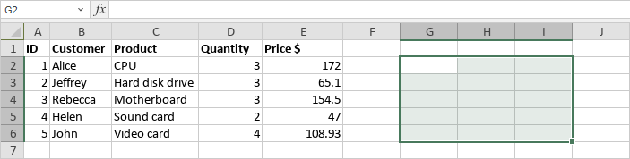
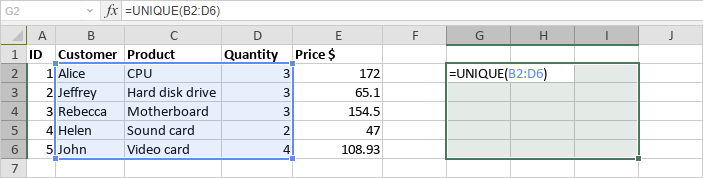
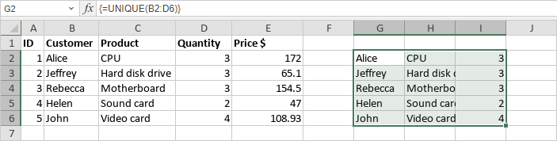
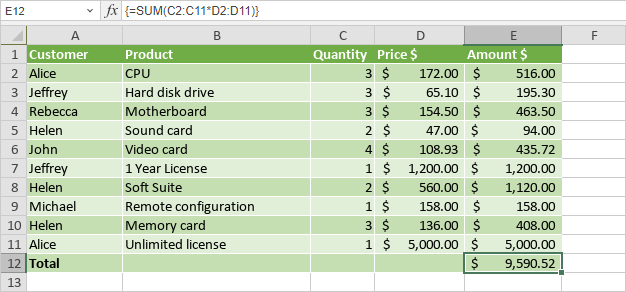
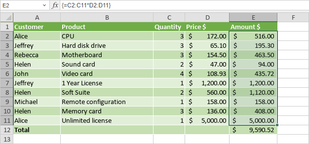
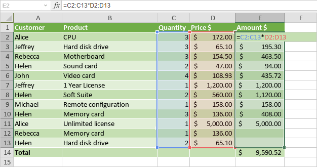
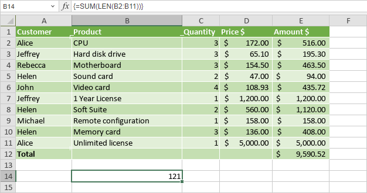
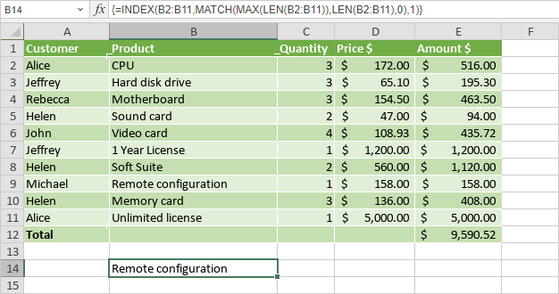
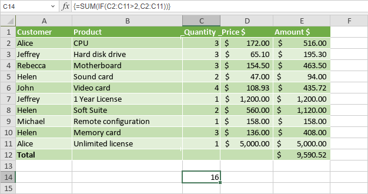

Umetanje formula niza
Uređivač tabela omogućava korišćenje formula niza. Formule niza obezbeđuju doslednost među formulama u tabeli, jer možete uneti jednu formulu niza umesto više standardnih formula, pojednostavljuju rad sa velikom količinom podataka, omogućavaju brzo popunjavanje radnog lista podacima i još mnogo toga.
Možete unositi formule i ugrađene funkcije kao formule niza kako biste:
- izvršili više izračunavanja odjednom i prikazali jedan rezultat ili
- vratili opseg vrednosti koji se prikazuje u više redova i/ili kolona.
Postoje i posebno namenjene funkcije koje mogu vratiti više vrednosti. Ako ih unesete pritiskom na Enter, vraćaju jednu vrednost. Ako izaberete izlazni opseg ćelija za prikaz rezultata, a zatim unesete funkciju pritiskom na Ctrl + Shift + Enter, ona vraća opseg vrednosti (broj vraćenih vrednosti zavisi od veličine prethodno izabranog izlaznog opsega). Lista ispod sadrži linkove ka detaljnim opisima ovih funkcija.
Funkcije niza
Umetanje formula niza
Da biste umetnuli formulu niza,
- Izaberite opseg ćelija u kojem želite da prikažete rezultate.

- Unesite formulu koju želite da koristite u traku sa formulama, navodeći potrebne argumente unutar zagrada ().

- Pritisnite kombinaciju tastera Ctrl + Shift + Enter.

Rezultati će biti prikazani u izabranom opsegu ćelija, a formula u traci sa formulama biće automatski okružena vitičastim zagradama { } kako bi se naznačilo da je u pitanju formula niza. Na primer, {=UNIQUE(B2:D6)}. Ove zagrade nije moguće uneti ručno.
Kreiranje formule niza u jednoj ćeliji
Sledeći primer ilustruje rezultat formule niza prikazan u jednoj ćeliji. Izaberite ćeliju, unesite =SUM(C2:C11*D2:D11) i pritisnite Ctrl + Shift + Enter.

Kreiranje formule niza u više ćelija
Sledeći primer ilustruje rezultate formule niza prikazane u opsegu ćelija. Izaberite opseg ćelija, unesite =C2:C11*D2:D11 i pritisnite Ctrl + Shift + Enter.

Uređivanje formula niza
Svaki put kada izmenite unetu formulu niza (npr. promenite argumente), potrebno je da pritisnete kombinaciju tastera Ctrl + Shift + Enter da biste sačuvali izmene.
Sledeći primer objašnjava kako da proširite formulu niza u više ćelija kada dodate nove podatke. Izaberite sve ćelije koje sadrže formulu niza, kao i prazne ćelije pored novih podataka, izmenite argumente u traci sa formulama tako da uključe nove podatke i pritisnite Ctrl + Shift + Enter.

Ako želite da primenite formulu niza u više ćelija na manji opseg ćelija, potrebno je da obrišete trenutnu formulu niza, a zatim unesete novu formulu niza.
Deo niza ne može se menjati niti brisati. Ako pokušate da izmenite, premestite ili obrišete jednu ćeliju unutar niza ili da umetnete novu ćeliju u niz, dobićete sledeće upozorenje: Ne možete menjati deo niza.
Da biste obrisali formulu niza, izaberite sve ćelije koje sadrže formulu niza i pritisnite Delete. Alternativno, izaberite formulu niza u traci sa formulama, pritisnite Delete, a zatim pritisnite Ctrl + Shift + Enter.
Primeri upotrebe formula niza
Ovaj odeljak pruža nekoliko primera kako da koristite formule niza za izvršavanje određenih zadataka.
Brojanje broja karaktera u opsegu ćelija
Možete koristiti sledeću formulu niza, zamenjujući opseg ćelija u argumentu sopstvenim: =SUM(LEN(B2:B11)). Funkcija LEN izračunava dužinu svakog tekstualnog niza u opsegu ćelija. Funkcija SUM sabira vrednosti.

Da biste dobili prosečan broj karaktera, zamenite SUM funkcijom AVERAGE.
Pronalaženje najdužeg niza znakova u opsegu ćelija
Možete koristiti sledeću formulu niza, zamenjujući opsege ćelija u argumentima sopstvenim: =INDEX(B2:B11,MATCH(MAX(LEN(B2:B11)),LEN(B2:B11),0),1). Funkcija LEN izračunava dužinu svakog tekstualnog niza u opsegu ćelija. Funkcija MAX izračunava najveću vrednost. Funkcija MATCH pronalazi adresu ćelije sa najdužim nizom. Funkcija INDEX vraća vrednost iz pronađene ćelije.

Da biste pronašli najkraći niz znakova, zamenite MAX funkcijom MIN.
Sabiranje vrednosti na osnovu uslova
Da biste sabrali vrednosti veće od zadatog broja (2 u ovom primeru), možete koristiti sledeću formulu niza, zamenjujući opsege ćelija u argumentima sopstvenim: =SUM(IF(C2:C11>2,C2:C11)). Funkcija IF kreira niz pozitivnih i netačnih vrednosti. Funkcija SUM ignoriše netačne vrednosti i sabira pozitivne vrednosti.
